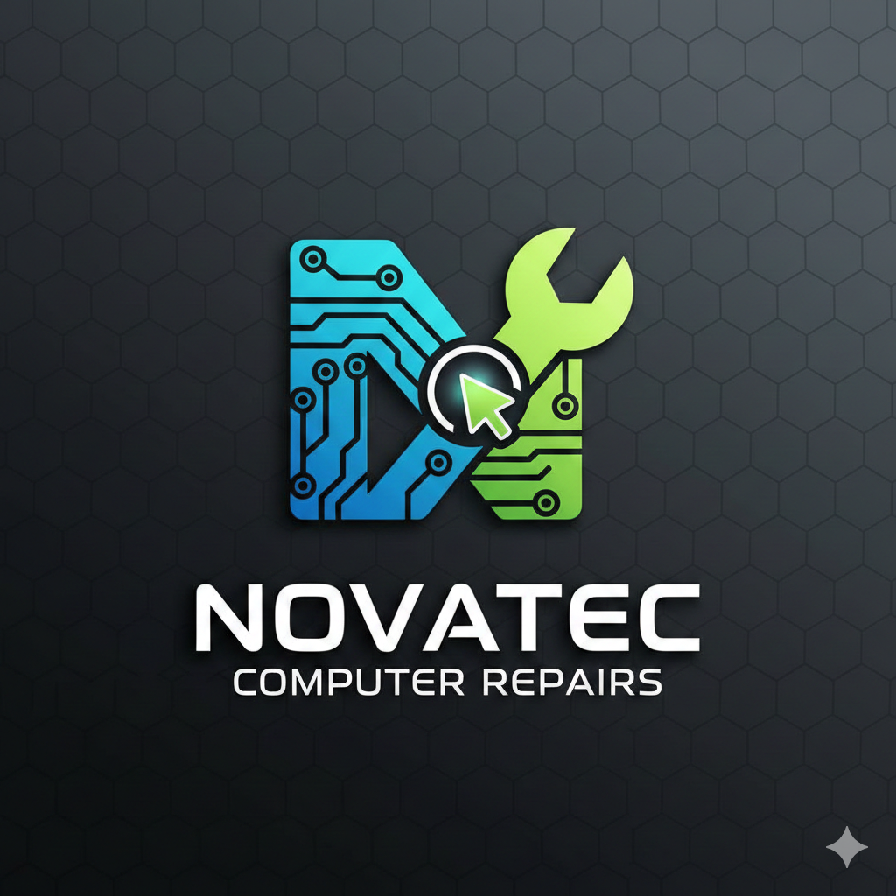
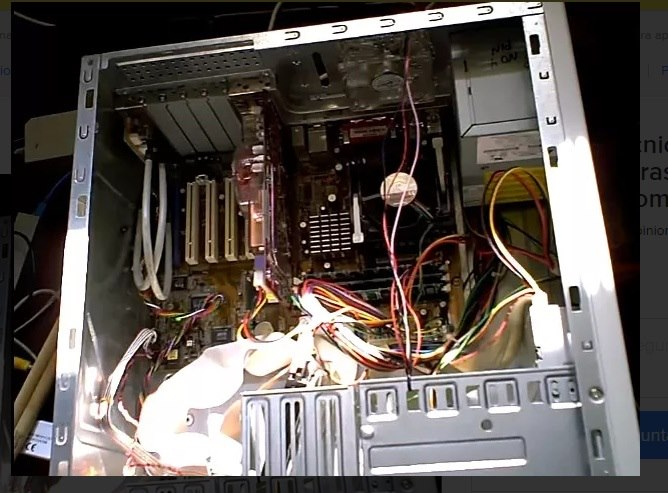
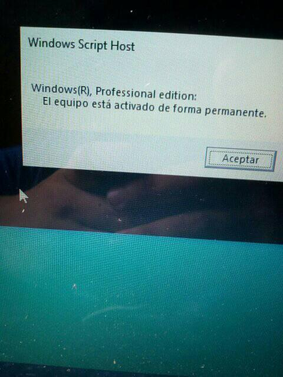

En Novatec A&R, somos un equipo de especialistas dedicados exclusivamente al soporte técnico informático integral. Nuestra misión es simple:
asegurar el óptimo rendimiento y la continuidad de sus equipos. Desde la resolución de fallas de hardware y software, hasta la optimización del sistema y la prevención de problemas, actuamos como sus aliados tecnológicos. Entendemos que su tiempo y la funcionalidad de sus herramientas son cruciales, por eso ofrecemos soluciones rápidas, fiables y profesionales para que sus computadoras y sistemas operen siempre con la máxima eficiencia.
Despues de un mantenimiento a una pc de escritorio

instalacion del sistema operativo windows desde cero

MIS DATOS DE CONTACTO:
TÉCNICO ENCARGADO:
elmer ruben.
MI NUMERO DE CONTACTO Y TAMBIEN ES WHATSAPP:
+51 967371882
Mi correo electronico es:
erbr2018@gmail.com